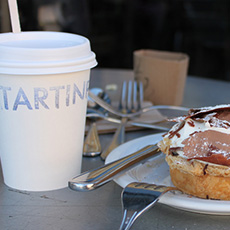
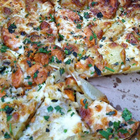
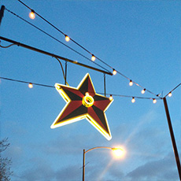
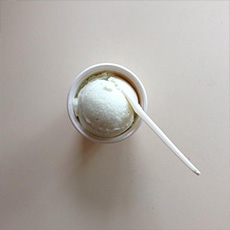

My Restaurants |
|||
| Home | My Memory | My Movies | My Restaurants |
| 
Tartine Bakery |

Cheese Board Pizza Collective |

Big Star |

Humphry Slocombe |
|
Tartine Bakery is a famous bakery tucked in a sidestreet in San Francisco. Their bread and other baked good are wonderfull. Even if there always seems to be a long line there, it's worth the wait. I had a great sandwich when I visited. Cheese Board Pizza Collective is a few blocks away from the UC Berkeley campus. It's the perfect way to send an afternoon. You can only buy half or full pizzas. Their selection of rotating vegetarian pizzas will have you wanting sell all of your possesions and become a pizza hobo. It's great atmosphere and cheap prices make this one of my picks. Just off the Chicago Blue Line, Big Star is waiting with tacos and wiskey shots. Sit down, get some guac and a beer, and enjoy a night full of awesome conversations. While waiting in line sometimes takes almost 3 hours, get in if you can. Be ready to hang out with some hipsters. Five out ot five stars. One of my favorite menue items at Humphry Slocombe is an ice cream flavor called: "Secret Breakfast". The item consits of a vanilla ice cream base flavored with bourbon and cornflakes. While it is located in San Francisco, it still one of the better frozen treats I have had in my life. Add another scoop of their Blue Bottle Coffee flavor and you can have breakfast for dessert. I picked it because it's something that is difficult to make outside of the resturant. It is also the best summertime night snack. |
|||